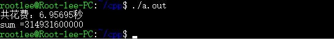

C++性能榨汁机之分支预测器(3)
前言
前面两篇文章，我们大体介绍了分支预测器的基本概念及经典实现方法：1. 分支预测器的概念与作用 2. 分支预测器的经典实现方法 ，我们又参与CPU架构相关的工作，那么我们了解到的分支预测器这些知识用处在哪里呢？或者换句话说，这些知识对我们写程序有什么指导意义吗？
条件判断与循环这些程序基本组成部分是我们写程序必须用到的结构，而条件判断与循环终止判断反映在机器指令上就是条件分支跳转与否，决定着CPU下次取指的地址，所以提高CPU分支判断准确率，降低流水线冲刷频率对我们提高程序性能有着极大的影响。
用C++直观感受分支预测器对程序的影响
分支预测器是CPU硬件层面的东西，既看不见也摸不着，那我们只能从一段简单的包含循环和条件判断的程序开始，直观的去感受下分支预测器对我们程序的影响。以下这段代码来自Stack OverFlow的一个经典问题：Why is it faster to process a sorted array than an unsorted array? - Stack Overflow ，我做了一点稍微修改，代码如下：
1 | //branch_predictor.cpp |
上述程序逻辑很简单，就是使用0-255范围的随机数填充大小为32768的数组data，对data进行排序，循环100000次，每次循环都遍历data数组，并将数组中大于128的数累加到sum变量中。
该程序在我电脑上使用g++默认优化等级编译后，运行结果如下：

如果我们将上面代码中的排序注释掉，即我们不对数组中的数字进行排序，而是直接使用原始的乱序的数组进行100000次累加，得到的运行结果如下：
我们发现同样一段代码，却因为数组中数据是否有序而导致运行时间相差了大约3倍（6.95695 : 20.272），看我们这段代码，逻辑上与数组是否有序是没有任何关系的，无论数组是否有序，for循环里面的if语句进入的次数是一样的，那么到底什么原因导致了程序运行性能跟数据的有序与否有关呢？
没错，就是分支预测器的原因，在本例子中，有序的原始数据被称为对分支预测器友好的数据，而乱序的原始数据便是对分支预测器不友好的数据。对于有序的数据，前n次循环，分支都是不跳转，后m次循环，分支都是跳转，这对于分支预测器来说很好预测，只有在循环开始结束及跳转不跳转分界点容易产生预测错误，所以分支预测的准确度非常高，流水线效率也就更高；而对于无序的数据，每一次数据都有可能大于或者小于128，也就是每次跳转的概率是50%，而且跳转不跳转完全随机，所以分支预测器对于这样的分支跳转的预测准确率很低，无法做出有效的分支预测，导致流水线被频繁冲刷，严重影响了流水线的吞吐量。
从汇编语言层面看分支预测
为了更为充分的理解分支跳转命令在程序中的存在，我们通过g++的汇编指令，看branch_predictor.cpp的汇编级代码是什么样的，在shell中运行如下命令：
1 | g++ -S branch_predictor.cpp |
运行该命令后，g++会将生成的汇编代码branch_predictor.s放在当前文件夹，通过vim查看汇编代码（AT&T格式汇编，不是intel格式）：
1 | .L8: |
为了便于阅读，上述汇编代码并不是完整版代码，只是对应于原始C++代码中关键的遍历数组的汇编代码，对应的C++部分代码是：
1 | for(unsigned c = 0; c < arraySize; ++c){ |
汇编代码分析：.L8是给循环变量c赋初始值0，.L7部分是循环主体，首先判断c是否大于32767，如果大于32767则跳转到.L5，代表循环结束，否则进入循环体执行判断与累加。这段汇编代码中最最关键的两句汇编命令就是：
1 | cmpl $127, %eax |
判断data[c]是否大于128，如果data[c]大于128，则跳转到.L6，否则继续顺序执行累加操作，分支预测器就是在这里起到了关键作用，如果分支预测器预测会发生跳转，则会从.L6代码段取指，如果预测不跳转，则顺序取指。假设遇到分支指令cmpl时分支预测器预测不会发生跳转，则顺序取指，累加部分指令进入流水线进行译码等操作，等cmpl执行完毕后，发现分支判断运行结果是跳转到.L6，即分支预测错误，则在流水线中的累加部分指令则必须被冲刷掉，然后重新从.L6代码段取指、译码、执行……，如果预测错误出现太频繁，势必会影响到流水线的吞吐量，导致性能下降。
总结
我们上面分别从C++代码层面和汇编代码层面看到了分支预测器是如何影响到程序的运行性能的，也希望能在实际项目中正确的应用以提高程序执行效率，避免写出对分支预测器不友好的分支判断程序。下一篇文章，我将就如何避免分支预测影响程序执行效率讲一点点自己在项目中的心得。